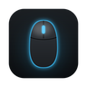

Mustafa Çiçek
Electrical & Electronics Engineer (Boğaziçi University) AI Engineering · Python · BackendElektrik-Elektronik Mühendisi (Boğaziçi Üniversitesi) AI Engineering · Python · Backend
I build AI automation and integrations, Python tools and backend services, plus small, fast apps for macOS, Android and the browser. My capstone researched the security of EtherCAT industrial networks, and I have installed industrial monitoring and control systems.AI otomasyonu ve entegrasyonu, Python araçları ve backend servisleri geliştiriyorum. Ayrıca macOS, Android ve tarayıcı için küçük, hızlı uygulamalar yazıyorum. Bitirme projemde EtherCAT endüstriyel ağlarının güvenliğini araştırdım; endüstriyel izleme ve kontrol sistemleri kurdum.
- PROJECTSGELİŞTİRDİKLERİM
- 17 apps & extensions17 uygulama ve eklenti

MouseTune
Configures supported gaming mice on macOS. A fork of OpenSnek.macOS’te desteklenen oyun farelerini yapılandırır. OpenSnek’in fork’u.
Adds a Turkish UI, battery forecast and a redesigned layout. I also fixed the Bluetooth battery reading upstream.Türkçe arayüz, pil ömrü tahmini ve yeni düzen ekler. Bluetooth pil göstergesi hatasını ana projede de düzelttim.
macOSOpen sourceAçık kaynak-
Opens your chosen app when the TV boots or wakes from standby.TV açıldığında veya bekleme modundan çıktığında seçtiğin uygulamayı açar.
No internet permission. English & Turkish UI.İnternet izni yok. Türkçe ve İngilizce arayüz.
Android TVOpen sourceAçık kaynak -
Select and manage many YouTube playlist items at once.YouTube oynatma listelerinde birçok videoyu tek seferde seçip yönetir.
Copy, move, sort, find duplicates and deleted/private videos. No data collection.Kopyala, taşı, sırala; kopya ve silinmiş/gizli videoları bul. Veri toplamaz.
Chrome · FirefoxOpen sourceAçık kaynak Ferah
Mac cleaner that also finds duplicate files.Kopya dosyaları da bulan Mac temizleyici.
Clears caches, logs and temp files and sorts duplicates by size. You choose what gets deleted; no internet connection.Önbellek, günlük ve geçici dosyaları temizler, kopyaları boyuta göre sıralar. Neyin silineceğini sen seçersin; internete bağlanmaz.
macOSKablosuzGonder
Tiny wireless book transfer to e-readers running KOReader.KOReader kullanan e-okuyuculara kablosuz kitap gönderen küçük araç.
A lightweight alternative to sending books with Calibre.Kitap göndermek için Calibre’ye hafif bir alternatif.
macOSİş Radarı
Collects, filters and tracks job listings in one place.İş ilanlarını tek yerde toplar, filtreler ve takip eder.
Sorts listings into stages — to apply, applied, won’t apply — with versioned backups.İlanları aşamalara ayırır (başvurulacak, başvuruldu, başvurulmayacak); sürümlü yedekleme.
macOSKitap Okuyucu
Reads PDF and EPUB books aloud.PDF ve EPUB kitapları sesli okur.
Uses the built-in macOS voices with adjustable speed and voice; the current sentence is highlighted. Remembers your place and works fully offline.macOS’in yerleşik sesleriyle okur; hız ve ses ayarlanır, okunan cümle vurgulanır. Kaldığın yeri hatırlar, tamamen çevrimdışı çalışır.
macOSVoltWipe
Automatic cache cleaner for Android.Android için otomatik önbellek temizleyici.
Written in Kotlin; preparing for release on Google Play.Kotlin ile yazıldı; Google Play’de yayına hazırlanıyor.
Android